+++
title = "Tasarım Sözlüğü: Tensegrity"
description=""
url="sayi-13/tasarimda-tensegrity-nedir"
aciklama="Tensegrity kelimesini tension (gerginlik) ve integrity (bütünlük) kelimelerinin birleşimi oluşturdu. Bu kelime mucit Richard Buckminster tarafından bulunmuştur. Tensegrity, Buckminster Fuller tarafından; insanlar yerine doğa tarafından inşa edilmiş gibi görünen yeni bir tür mimari vizyonunu tanımlamak için icat edildi."
type="sayfa"
thumb="/img/tensegrity-thumbnail.jpg"
date = "2021-09-06"
sayi=["13"]
sayfa="05"
yazar=["goksu gokturk"]
tags= ["ana sayfa", "dergi", "tasarim sozlugu"]
+++

<div class="container">
   <h2 id="tensegrity-nedir">Tensegrity Nedir?</h2>
   <div class="row">
      <div class="col-md-6">
         <p>
            Tensegrity kelimesini tension (gerginlik) ve integrity (bütünlük)
            kelimelerinin birleşimi oluşturdu. Bu kelime mucit Richard
            Buckminster tarafından bulunmuştur.
         </p>
         <div class="p-md-5 bg-grey">
            <p>
                🔍 Richard Buckminster Fuller (12 Temmuz 1895 - 1 Temmuz 1983),
               Amerikalı felsefeci, mühendis, mimar, şair, yazar ve mucit.
               Mimarlıkta bir mekanı en az gereçle örtme olanağı sağlayan
               &quot;Jeodezik Kubbe&quot;yi tasarlamıştır. R. Buckminster
               Fuller, kendisini tek bir alanla sınırlamayan, küresel sorunları
               çözmek için &#39;kapsamlı bir ileriye dönük tasarım
               bilimcisi&#39; olarak çalışan vizyon sahibi bir 20. yüzyıl mucididir.
            </p>
         </div>
         {{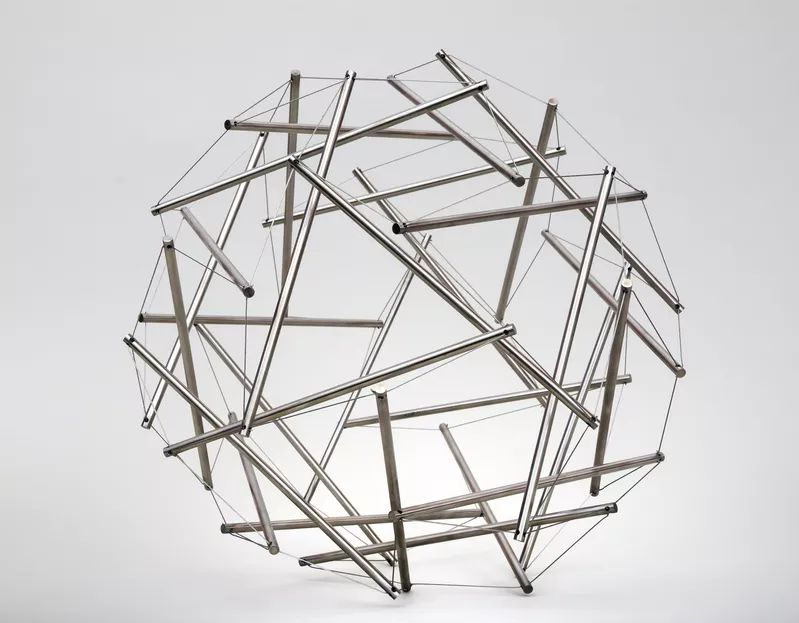}}
      </div>
      <div class="col-md-6">
         {{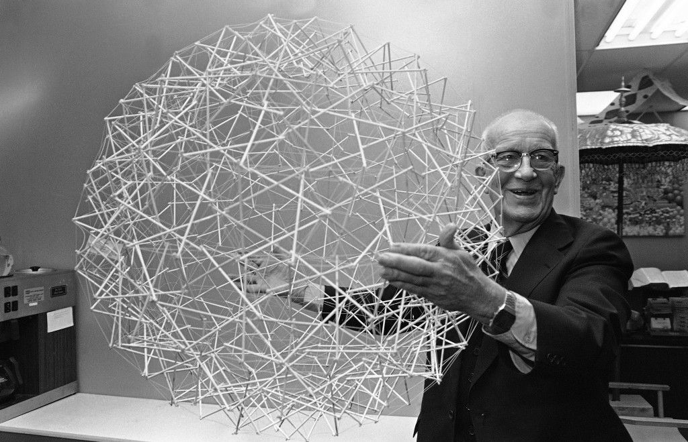}}<small>Richard Buckminster Fuller</small><br /><br />
         {{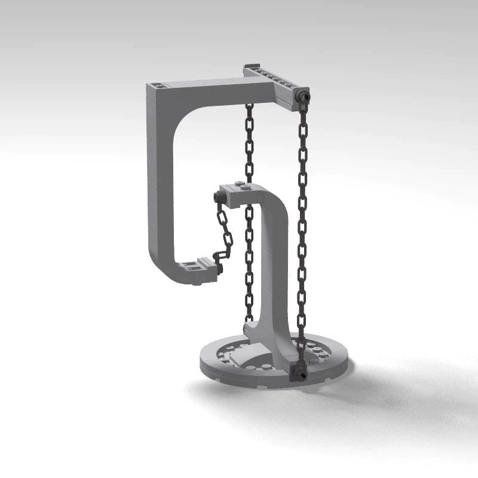}}
      </div>
   </div>

   <div class="row">
      <div class="col-md-4">
         {{}}
      </div>
      <div class="col-md-4">
         <p>
            Tensegrity yapıları, birkaç basit tasarım modelinin birleşimine
            dayanır: Elemanlar, saf sıkıştırma ya da saf gerilim ile yüklenir,
            bu da yapının yalnızca kablolar eğilirse veya çubuklar bükülürse
            başarısız olacağı anlamına gelir. Bu, her bir elemanın malzeme
            özelliklerinin ve kesit geometrisinin, taşıdığı belirli yüke göre
            optimize edilmesini sağlar. Ön yük veya iç ön gerilimi, yapısal
            bütünlüğü korumak için kabloların her zaman gergin olmasına izin
            verir. Yapı üzerindeki stres arttıkça elemanların
            gergin/sıkışık kalmasına izin veren mekanik stabilitedir.
            Kablo gerilimi arttıkça yapı da sertleşir.
         </p>
      </div>
      <div class="col-md-4">
         <video width="100%" height="100%" loop autoplay>
            <source src="https://www.markut.net/sayi-13/tasarimda-tensegrity-nedir/tensegrity-lego-video.mp4" />
         </video>
      </div>
   </div>

   <div class="row">
      <div class="col-md-4">
         {{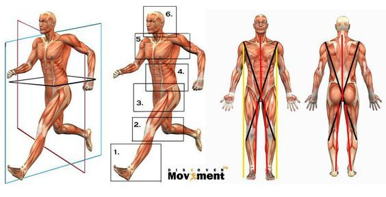}}
      </div>
      <div class="col-md-4">
         <p>
            Tensegrity aslında biyolojik temelli bir yapıdır. Virüslerden,
            omurgalılara; memelilere kadar gerilim yapıları mevcuttur. İnsan
            ayakta durmaya ve adım atmaya başladığından beri sert dayanıklı
            yapıdaki iskelet ile esnek yapıdaki kasların birbirine bağlanması
            ile gerilim oluşturması sayesinde yaşamsal faaliyetlerimizi yerimize
            getirmiş oluyoruz. Sürekli gerilim ile birbirini iten ve sıkıştırma
            ile birbirini tutan parçalar bütününden bir araya geliyoruz.
         </p>
      </div>
      <div class="col-md-4">
         {{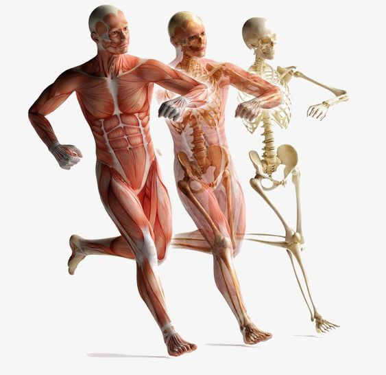}}
      </div>
   </div>

   <div class="row">
      <div class="col-md-6">
         {{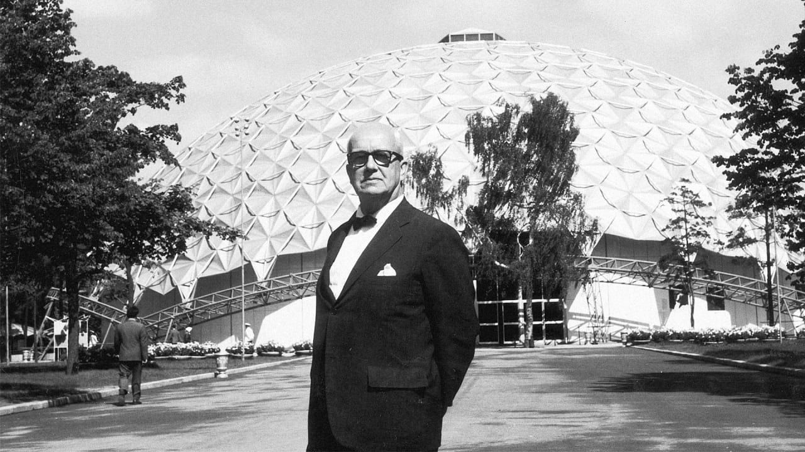}}<small>Richard Buckminster Fuller, Jeodezik Kubbe</small>
      </div>
      <div class="col-md-6">
         <p>
            Tensegrity, Buckminster Fuller tarafından; insanlar yerine doğa tarafından inşa
            edilmiş gibi görünen yeni bir tür mimari vizyonunu tanımlamak için
            icat edildi. Katı öğeleri sıkıştırarak üst üste yığan geçmişin
            piramitleri, sütunları ve tuğla üzerine tuğla binalarının aksine,
            Fuller, sağlamlığı ve bütünlüğü ile yaygın gerilim kuvvetini,
            dolayısıyla tensegrity'yi keşfetti. Fuller, vizyonunu birçok
            kişinin tasarım ve mimaride yeni yönler keşfettiği 1920&#39;lerde
            geliştirmeye başladı. Ancak 1949&#39;da "tensile (gerginlik)" olarak
            tanımlanan ilk yapıyı yaratan öğrencisi, heykeltıraş Kenneth
            Snelson&#39;dı. Snelson gergin bir naylon kablo ile havada asılı
            duran iki adet X-şekilli ahşap payanda kullanarak tensegrity&#39;yi
            oluşturdu.
         </p>
      </div>
   </div>

   <hr />
   <div class="row">
      <div class="col-md-6">
         {{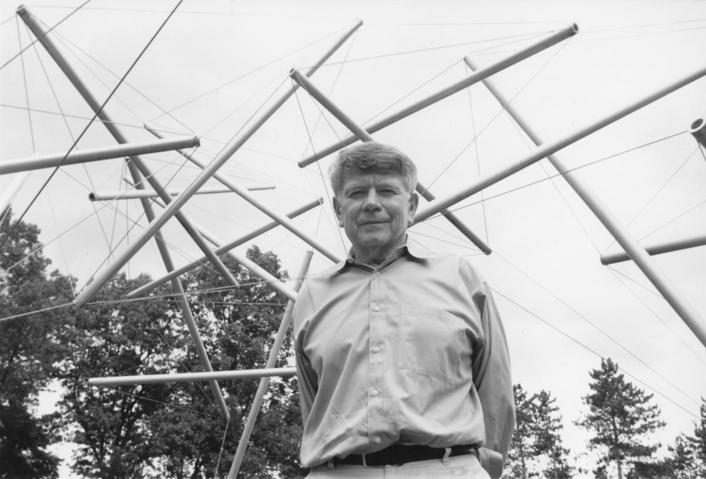}}<small>
            <strong>Kenneth Duane Snelson</strong>, Amerikalı çağdaş heykeltıraş
            ve fotoğrafçı. Heykel çalışmaları, &#39;gerginlik&#39; fikrine göre
            düzenlenmiş esnek ve katı bileşenlerden oluşur. Snelson, tanımlayıcı
            yüzer sıkıştırma terimini tercih etti. Needle Tower&#39;ın
            tasarımcısıdır.
         </small>
      </div>
      <div class="col-md-6">
         <p>
            Snelson daha sonra gerilimin yalnızca insan yapımı nesneler
            aracılığıyla gerçekleştirilen bir ilke olduğunu savunacaktı. Ancak
            Fuller&#39;ın vizyonu, doğanın tensegrity kullanarak inşa ettiği
            inancına dayanıyordu. Gerçekten de, birçok gergin kasları, bağları
            ve tendonları ile vücudun sert kemiklerini yukarı çeken, böylece
            onları yerçekimi kuvvetine karşı stabilize eden ve destekleyen insan
            çerçevesi, iş başındaki gerginliğin en iyi örneğidir.
         </p>
         <p>
            Son birkaç on yılda bilim insanları, gerilimin organlar, dokular,
            hücreler ve hatta moleküller düzeyinde işleyen doğanın temel bir
            tasarım ilkesi olduğunu göstermiştir. Keşifleri, bu sefer mikro ve
            hatta nano ölçekte, tamamen yeni bir dizi insan yapımı gerginlik
            yapılarına yol açıyor.
         </p>
      </div>
   </div>

   <h2 class="mavi" id="tensegrity-mimari-tasarım-örnekleri">
      Tensegrity Mimari Tasarım Örnekleri
   </h2>
   <div class="row">
      <div class="col-md-4">
         {{}}<small>Kurilpa Bridge</small>
      </div>
      <div class="col-md-4">
         {{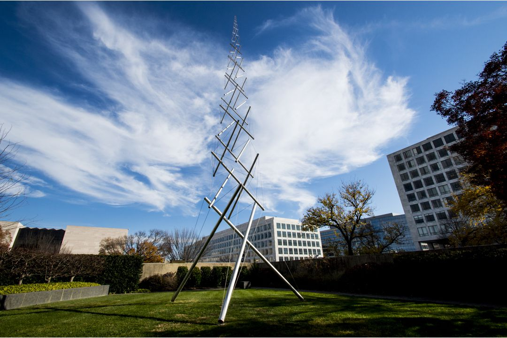}}<small>Needle Tower</small>
      </div>
      <div class="col-md-4">
         {{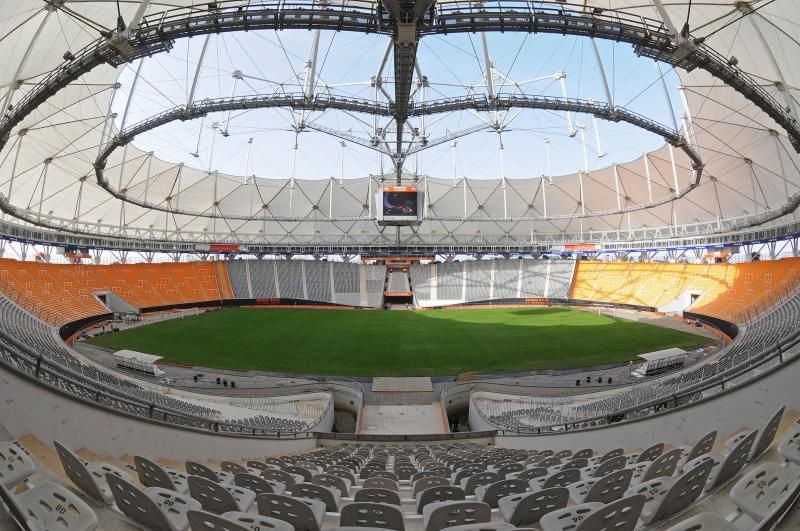}}<small>Estadio Ciudad de La Plata</small>
      </div>
   </div>
   <div class="row">
      <div class="col-md-4">
         {{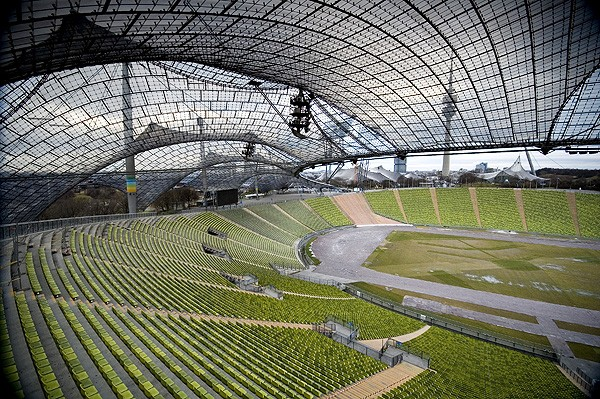}}<small>Münih Olimpiyat Stadyumu</small>
      </div>
      <div class="col-md-4">
         {{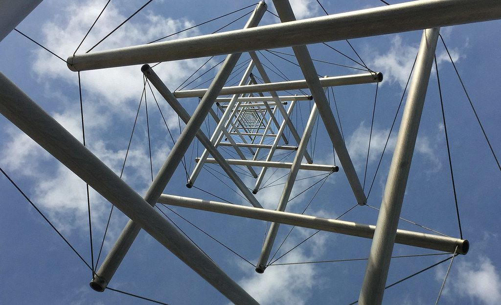}}<small>Needle Tower</small>
      </div>
      <div class="col-md-4">
         {{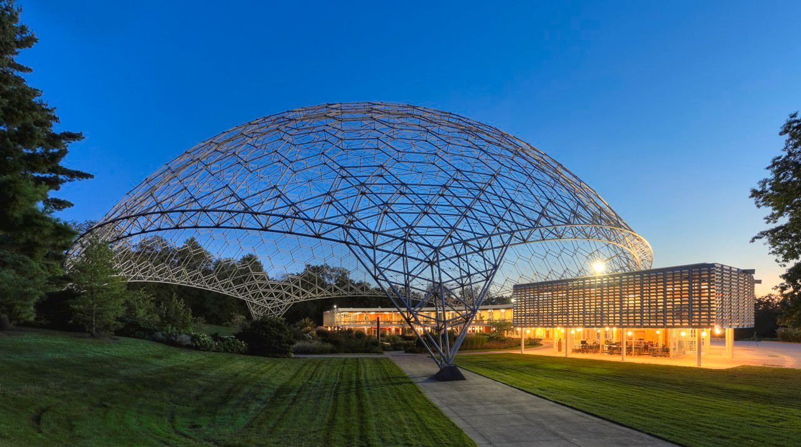}}<small>ASM Uluslararası Merkez Binası</small>
      </div>
   </div>

   <h2 class="text-success" id="tensegrity-ürün-tasarım-örnekleri">
      Tensegrity Ürün Tasarım Örnekleri
   </h2>
   <div class="row">
      <div class="col-md-4">
         {{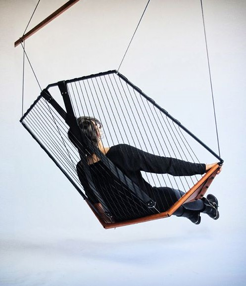}}<small>Félix Guyon, Solo Cello</small><br /><br /><br /><br />
         {{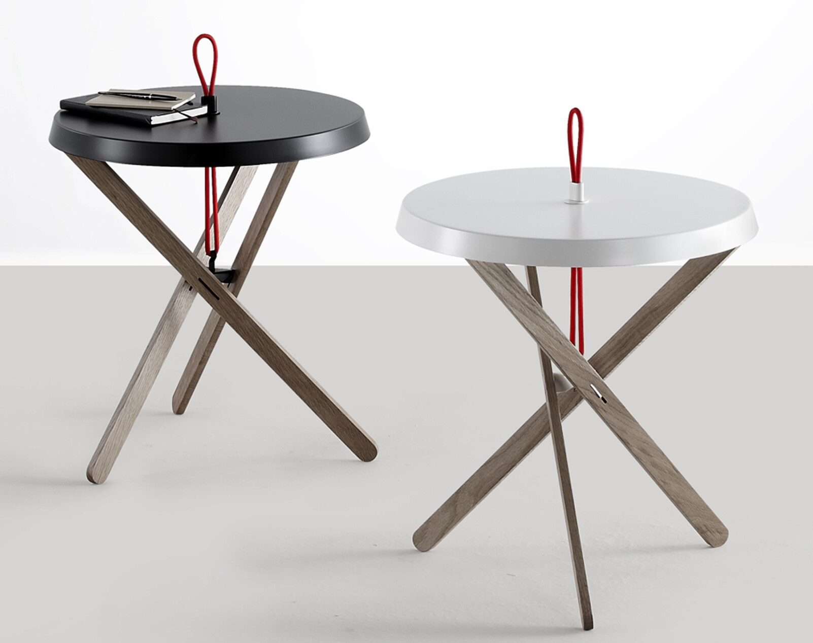}}<small
            >Simon Busse, Mox Company için Marionet yan sehpasını
            tasarladı.</small
         >
      </div>
      <div class="col-md-4">
         {{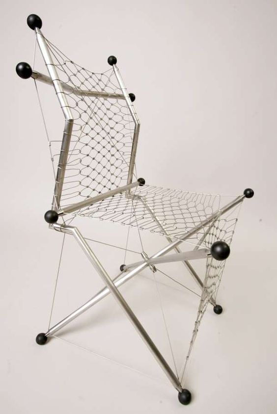}}<small>Konstantin Achkov, Heykeltıraş/Tasarımcı</small
         ><br /><br />
         {{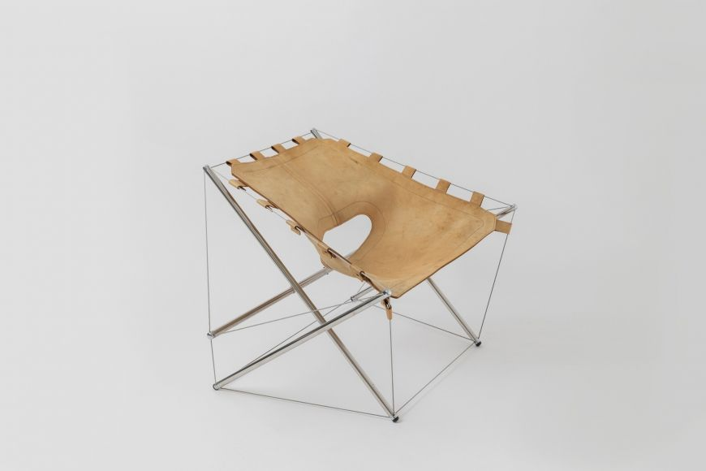}}<small
            >Jacques-Henri Varichon, <strong>Galaxie Sandalye</strong></small
         >
      </div>
      <div class="col-md-4">
         <br /><br />
         {{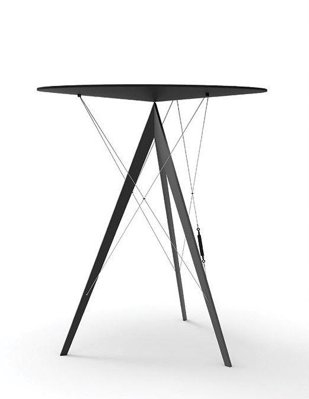}}<small>Choo Seongmin, The Tension Table</small><br /><br />
         {{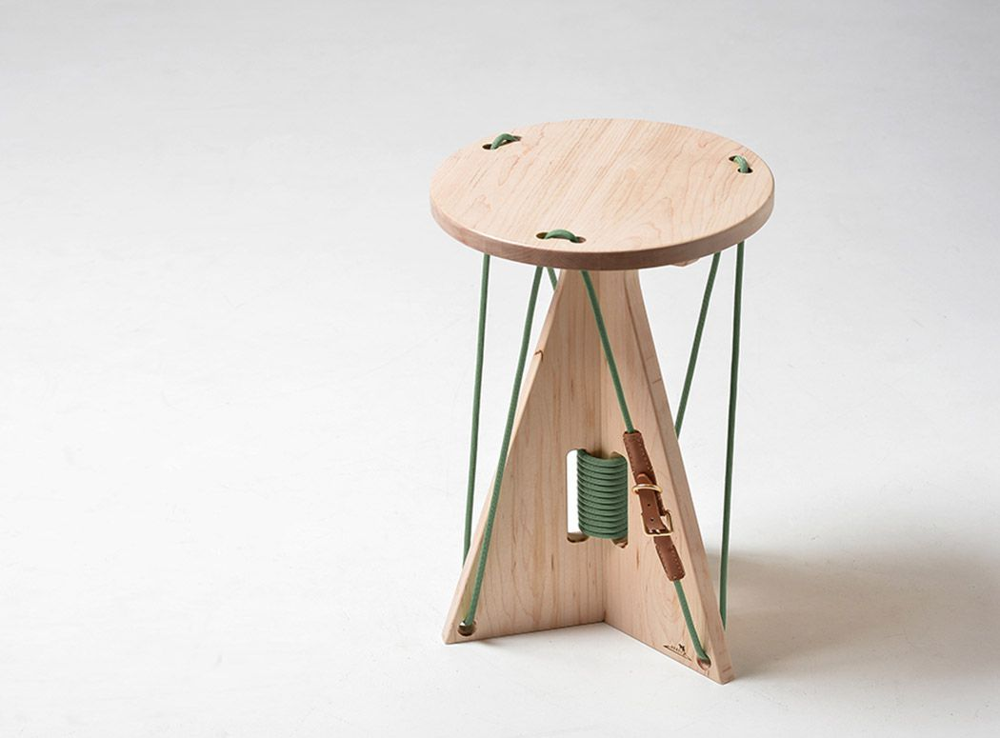}}

         <small>NYUN, Connected Stool</small>
      </div>
   </div>
   <button
   class="btn markutbtn"
   data-target="#my-collapse"
   data-toggle="collapse"
   aria-expanded="false"
   aria-controls="my-collapse"
   >
   Kaynaklar
   </button>
   <div id="my-collapse" class="collapse">
   <pre> <small><code>  
    https://www.bfi.org/

    http://www.scholarpedia.org/article/Tensegrity
    
    https://tr.wikipedia.org/wiki/Buckminster_Fuller
    
    https://en.wikipedia.org/wiki/Tensegrity
    
    https://tr.wikipedia.org/wiki/Jeodezik_kubbe
    
    https://web.archive.org/web/20061019213455/http://www.rwgrayprojects.com/rbfnotes/fpapers/tensegrity/tenseg01.html
    
    https://www.smithsonianmag.com/smithsonian-institution/how-does-hirshhorn-60-foot-needle-tower-stay-upright-in-stiff-wind-180953391/
    
    https://t24.com.tr/yazarlar/ozlem-yalim-tasarim/kiskirtici-bir-utopik-buckminster-fuller,25360https://t24.com.tr/yazarlar/ozlem-yalim-tasarim/kiskirtici-bir-utopik-buckminster-fuller,25360
    
    https://www.youtube.com/watch?v=iSHtGwJzaK0
    
    https://www.youtube.com/watch?v=BzgxYpDyO0M
    
    https://www.youtube.com/watch?v=0onncd0_0-o
    
    https://www.youtube.com/watch?v=VlhHTljKljk
    
    https://design-milk.com/marionet-by-simon-busse/?utm_source=feedburner&utm_campaign=Feed%3A+design-milk+(Design+Milk)&epik=dj0yJnU9LTNlek12U0dwaGRaTFV3Sno1WlotQ0ZQeEN6ZDVtejQmcD0wJm49eFJXdzlsZkFzSTduNnZyLVpUeXNfZyZ0PUFBQUFBR0U3TUJz
    
    https://www.yankodesign.com/2017/11/30/seating-you-can-solve-like-a-puzzle/
    
    https://www.yankodesign.com/2015/08/27/one-tense-table/
     </code></small></pre>
    </div>
</div>
